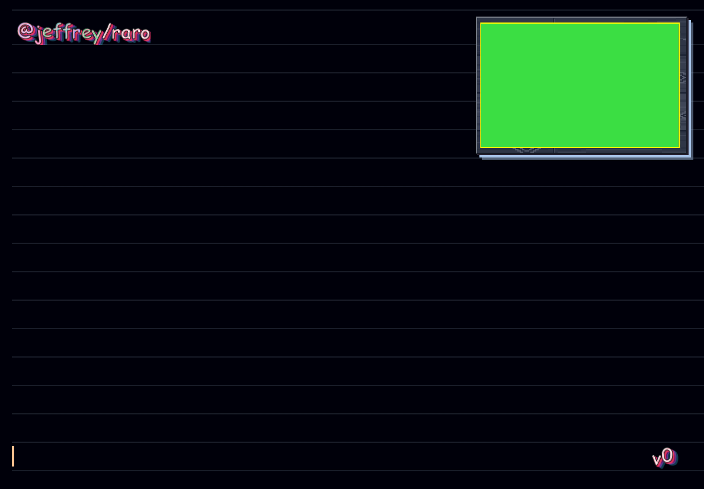

Make pieces, pictures, sounds, papers and Game Boy games with Aesthetic Computer.
Download for Mac0.7.16 · Apple silicon · macOS 12+ · iPhone is next
aesel @jeffrey/raro v0

PiecePictureSoundPaperGame Boy
- Every save publishes the piece to aesthetic.computer under your handle, and the preview reloads.
- Sound plays from the preview with a waveform in the margin.
- Replies are a notebook: ruled pages, code, math, diagrams and color swatches. Drag to select, right-click to copy.
- Tap a version label to preview an earlier revision.
- Provider is your choice: AC with daily credits, or your own Claude or Codex.
- ⌘N opens another workspace with its own agent, preview and letter.
Downloads
Sign in with Aesthetic Computer.
Use AC, Claude, or Codex.
Mac 0.7.16 · Apple silicon · macOS 12+ · DMG↓
iPhone Same account, notebook, donkey and live piece preview. Not on the App Store yet.…